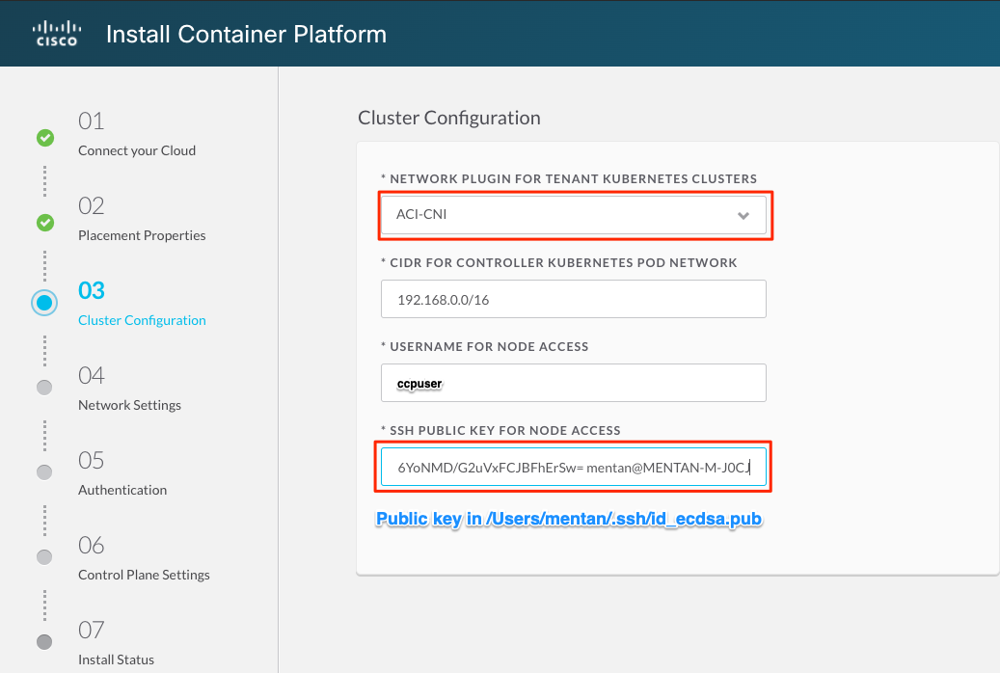
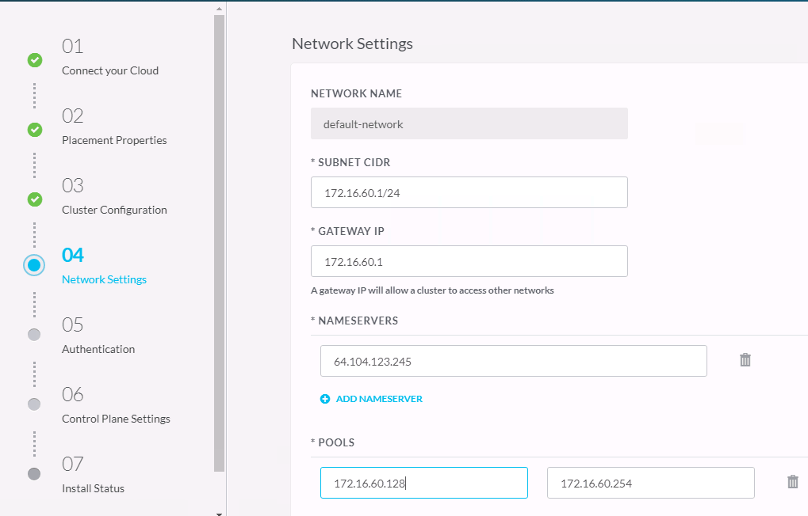
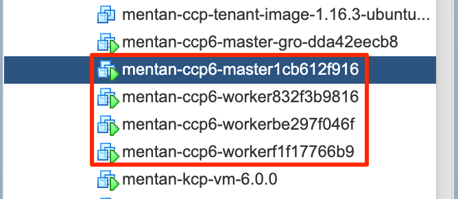

CCP安装 Part 1 - VM安装
安装 CCP VM
#下载最新版本的CCP安装介质, 解压缩为OVA文件
installer VM - kcp VM
e.g. kcp-vm-6.0.0.ova.tar.gz
node base VM - ccp tenant VM
e.g. ccp-tenant-image-1.16.3-ubuntu18-6.0.0.ova.tar.gz
#安装installer VM
-
在vCenter中导入KCP VM
存储设置
网络设置， port-group应与上面的ASAv DHCP interface网段打通，能够取得DHCP地址

在客户端生成SSH public key
MENTAN-M-J0CJ:~ mentan$ ssh-keygen -t ecdsa Generating public/private ecdsa key pair. Enter file in which to save the key (/Users/mentan/.ssh/id_ecdsa): /Users/mentan/.ssh/id_ecdsa already exists. Overwrite (y/n)? y Enter passphrase (empty for no passphrase): Enter same passphrase again: Your identification has been saved in /Users/mentan/.ssh/id_ecdsa. Your public key has been saved in /Users/mentan/.ssh/id_ecdsa.pub. The key fingerprint is: SHA256:BDFn7c6M87rtD7QaO6yE1WsIUUUEUPtb2Qn4nWwzQKc mentan@MENTAN-M-J0CJ The key's randomart image is: +---[ECDSA 256]---+ | .oB**.. . | | . * o.o | | . . o.E | | . + ..B o | | . . S== X | | + .o=+o o | | . o.=oo | | . .o=.. | | ..==o.. | +----[SHA256]-----+ MENTAN-M-J0CJ:~ mentan$ cd .ssh MENTAN-M-J0CJ:.ssh mentan$ ls -lth total 40 -rw-r--r-- 1 mentan staff 182B Apr 9 21:47 id_ecdsa.pub -rw------- 1 mentan staff 513B Apr 9 21:47 id_ecdsa -rw-r--r-- 1 mentan staff 3.1K Apr 8 00:31 known_hosts -rw-------@ 1 mentan staff 85B Jan 7 21:10 ccp_ed25519.pub -r-xr-xr-x@ 1 mentan staff 387B Jan 7 21:10 ccp_ed25519 MENTAN-M-J0CJ:.ssh mentan$ more id_ecdsa.pub ecdsa-sha2-nistp256 AAAAE2VjZHNhLXNoYTItbmlzdHAyNTYAAAAIbmlzdHAyNTYAAABBBCKWJC3eExw2QrFIzy/XmKtDk92B2aVu+Or0ZeqjkI57p3y/clJz9za+dMwa11hAJ6YoNMD/G2uVxFCJBFhErSw= mentan@MENTAN-M-J0CJ定制化界面，输入SSH Public key
完成安装
VM部署完成后，创建snapshot
-
在vCenter中导入node tenant VM (base VM). tenant VM在整个安装过程中无需开机，只是作为K8s node克隆模板用途。
存储设置
网络设置
定制化界面，输入密码
完成安装
CCP安装 Part 2 - KCP VM 设置
- 将KCP VM开机， VM将从DHCP服务器得到IP地址并给出控制台链接

-
通过给出的链接，访问CCP管理控制台
-
点击 Install，开始安装
- 01-输入vcenter登录信息
- 02-输入vcenter安置信息
- 03-输入CCP Cluster信息 (ACI-CNI) 
- 03-输入CCP Cluster信息 (Calico CNI)
Input CCP Cluster information (Calico CNI) * 04-输入网络信息
Input network information  * 05-输入认证信息，采用本地认证 * 06-输入控制平面信息，完成设置 * 安装完成后给出CCP入口地址
CCP Control-plane master/worker设置
当Installer完成后，会生成下列Control-plane VM：
- 1* Master
-
3* Worker

检查VM IP 地址
对所有master/worker, ssh登录并添加到group-master/worker的路由